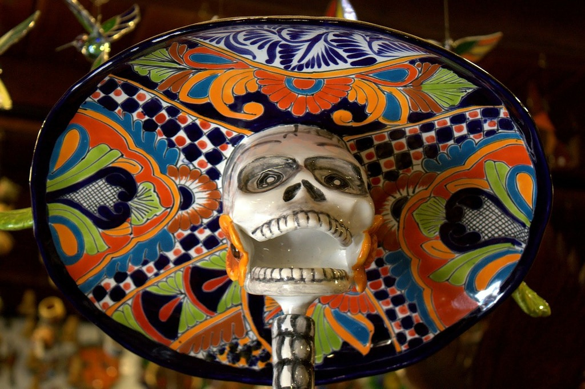

Ancient Origins and Blending of Cultures
Día de los Muertos, or Day of the Dead, is a deeply meaningful holiday celebrated primarily on November 1st and 2nd. Rather than a solemn occasion of mourning, it is a joyful remembrance that honors and remembers deceased loved ones, welcoming their spirits back home.
The roots of the holiday date back thousands of years to Indigenous Mesoamerican civilizations, including the Aztecs, Maya, and Nahua. Following Spanish colonization, these ancestral practices blended with Catholic traditions surrounding All Saints' Day and All Souls' Day.
Cultural Significance
It is a vibrant celebration of memory, unity, and respect for generations past.
Visual Traditions
Bright colors, marigold flowers, and sugar skulls decorate homes and cemeteries.
